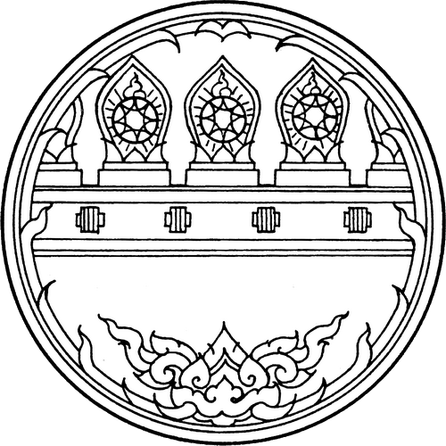

 Kamphaeng Phet
1. โมโกจู
ยอดเขาสูงที่ตั้งอยู่ภายในอุทยานแห่งชาติแม่วงก์
อีกหนึ่งสถานที่เหมาะสำหรับนักท่องเที่ยวที่ชื่นชอบการผจญภัย เมื่อไปถึงยอดเขา
จะเจอกับทิวทัศน์สวยงาม โดยเส้นทางพิชิตยอดดอยโมโกจู
จะเปิดให้นักท่องเที่ยวเที่ยวชมเพียง 4 เดือนเท่านั้น คือ เดือนพฤศจิกายน-กุมภาพันธ์
ทั้งนี้นักท่องเที่ยวจะต้องทำการติดต่อเจ้าหน้าที่อุทยานอย่างน้อย 1 สัปดาห์
ที่ตั้ง : อุทยานแห่งชาติแม่วงก์ ตำบลปางตาไว อำเภอปางศิลาทอง จังหวัดกำแพงเพชร
โทรศัพท์ : 090 579 291

2. ช่องเย็น
ที่เที่ยวธรรมชาติยอดนิยมอีกแห่งหนึ่ง ตั้งอยู่ภายในอุทยานแห่งชาติแม่วงก์
ห่างจากที่ทำการอุทยานประมาณ 28 กิโลเมตร
จะได้สัมผัสอากาศที่เย็นสบายตลอดทั้งปี และเป็นจุดดูพระอาทิตย์ตก ณ
จุดชมวิวผาสวรรค์ ที่สวยงามที่สุดแห่งหนึ่ง นอกจากอากาศที่นี่จะฟินได้แบบถึงใจแล้ว
ยังจะได้ชื่นชมกับความสวยงามของพรรณไม้และนกนานาชนิด
ที่อยู่ : ตำบลคลองน้ำไหล อำเภอคลองลาน จังหวัดกำแพงเพชร
โทรศัพท์ : 090 579 291
3. อุทยานประวัติศาสตร์กำแพงเพชร
กลุ่มโบราณสถานขนาดใหญ่ ที่ได้รับประกาศให้เป็น "มรดกโลก" จาก UNESCO เมื่อวันที่ 12 ธันวาคม พ.ศ.
2534 แบ่งออกเป็นโบราณสถานฝั่งตะวันออกและฝั่งตะวันตกของแม่น้ำปิง
โบราณสถานด้านตะวันออกเป็นที่ตั้งเมือง กำแพงเพชร
ส่วนโบราณสถานฝั่งตะวันตก คือ
เมืองนครชุมรูปแบบศิลปะที่ปรากฏนั้นมีลักษณะร่วมสมัยระหว่างสุโขทัยและอยุธยา
ที่อยู่ : ตำบลหนองปลิง อำเภอเมืองกำแพงเพชร จังหวัดกำแพงเพชร
โทรศัพท์ : 055 854 736
4. วัดพระสี่อิริยาบถ
วัดขนาดใหญ่และมีโบราณสถานที่เป็นเอกลักษณ์ คือ มณฑปพระสี่อิริยาบถ
ทั้งนี้ภายในวัดยังมีโบราณสถานสำคัญต่าง ๆ ประกอบด้วย "มณฑปจตุรมุข"
ซึ่งมีรูปแบบเหมือนดังที่พบที่วัดเชตุพนและวัดพระพายหลวง จังหวัดสุโขทัย "พระมหาวิหาร"
วิหารขนาดใหญ่ตั้งอยู่ด้านหน้าสุด และ "บ่อตัดศิลาแลง" ตั้งอยู่ด้านหน้าวัด
เป็นบ่อที่ใช้ในการตัดศิลาแลงให้เป็นรูปทรงต่าง ๆ ก่อนที่จะนำไปใช้ในการสร้างวัด
ที่อยู่ : ตำบลหนองปลิง อำเภอเมืองกำแพงเพชร จังหวัดกำแพงเพชร
โทรศัพท์ : 055 854 736
5. น้ำตกคลองลาน
จุดเด่นของน้ำตกคลองลานอยู่ที่ลำธารที่ไหลเป็นสายยาวเหยียดเหมือนคลอง
อีกทั้งยังเป็นน้ำตกที่สูงและใหญ่ เหมาะกับการพักผ่อนตามธรรมชาติและการถ่ายรูปสุด ๆ
ถือเป็นอีกหนึ่งสถานที่ท่องเที่ยวพักผ่อนหย่อนใจยอดนิยมของทั้งนักท่องเที่ยวและชาวบ้านในพื้นที่
ส่วนใหญ่นิยมมากินอาหารริมธารน้ำตก ส่วนเด็ก ๆ ก็ลงเล่นน้ำกันอย่างสนุกสนาน
อีกทั้งยังมีจุดกางเต็นท์ไว้บริการนักท่องเที่ยวอีกด้วย
ที่อยู่ : ตำบลคลองลานพัฒนา อำเภอคลองลาน จังหวัดกำแพงเพชร
โทรศํพท์ : 088 407 9915

6. ตลาดย้อนยุคนครชุม
นักท่องเที่ยวจะได้สัมผัสกับบรรยากาศตลาดแบบย้อนยุค เห็นได้จากการแต่งกายด้วยชุดไทยของพ่อค้าแม่ค้า
ซึ่งเป็นเอกลักษณ์ของชาวนครชุม นักท่องเที่ยวจะเพลิดเพลินไปกับการช้อปปิ้งสินค้าต่าง ๆ เช่น
สินค้าหัตถกรรม งานจักสาน แวะชิมอาหารโบราณที่หากินได้ยาก รวมถึงการชมการละเล่นพื้นบ้าน
การประกวดร้องเพลง และการบรรเลงดนตรีไทย เป็นต้น
โดยนักท่องเที่ยวสามารถเดินเที่ยวชมตลาดย้อนยุคนครชุม ได้ทุกวันศุกร์-เสาร์-อาทิตย์แรกของเดือน
ที่อยู่ : ตำบลนครชุม อำเภอเมืองกำแพงเพชร จังหวัดกำแพงเพชร
โทรศัพท์ : 055 738 868
7. วัดบรมธาตุนครชุมกำแพงเพชร
วัดเก่าแก่คู่บ้านคู่เมืองกำแพงเพชร ภายในประอบด้วยศาสนสถานสำคัญ เช่น
พระบรมธาตุเจดีย์ภายในบรรจุพระสารีริกธาตุ 9 องค์, ต้นศรีมหาโพธิ์ขนาดใหญ่ที่พระยาลิไททรงปลูกไว้,
พระอุโบสถหลังเก่า, พระวิหาร, วิหารพระนอน, ศาลาเรือนไทย
ยังมีศาลาการเปรียญที่ใช้เป็นศูนย์วัฒนธรรมไทยสายใยชุมชน
อีกทั้งยังเป็นศูนย์รวมวัตถุโบราณและเรื่องราวต่าง ๆ ของเมืองนครชุมเอาไว้มากมาย
เพื่อให้เป็นแหล่งความรู้แก่ชุมชน ทั้งทางด้านศาสนา ศิลปวัฒนธรรม และวิถีชีวิตสืบไป
ที่อยู่ : หมู่ที่ 3 บ้านปากคลองใต้ ตำบลนครชุม อำเภอเมืองกำแพงเพชร จังหวัดกำแพงเพชร
8. บ่อน้ำพุร้อนพระร่วง (บึงสาป)
แหล่งท่องเที่ยวเชิงสุขภาพอันเกิดจากน้ำพุร้อนธรรมชาติ ที่ปราศจากสารเจือปน
ล้อมรอบด้วยทิวทัศน์ธรรมชาติที่สวยงาม เหมาะสำหรับการพักผ่อนหย่อนใจ
บ่อน้ำพุร้อนแห่งนี้เป็นที่ร่ำลือในเรื่องคุณสมบัติในการรักษาโรคภัยไข้เจ็บ
อย่างอาการปวดเมื่อยตามร่างกาย หรือโรคผัวหนัง
จึงทำให้มีทั้งชาวบ้านและนักท่องเที่ยวต่างเดินทางกันมาอาบ ดื่ม และกิน
บางรายก็นำน้ำกลับไปเพื่อความเป็นสิริมงคล
แถมภายในยังมีบ้านพักรับรองให้นักท่องเที่ยวได้นอนค้างคืนอีกด้วย
ที่อยู่ : หมู่ 3 ตำบลลานดอกไม้ อำเภอเมืองกำแพงเพชร จังหวัดกำแพงเพชร
โทรศัพท์ : 055 718 280-96
9. สระมรกตกำแพงเพชร
อีกหนึ่งสถานที่ท่องเที่ยวที่เคยเป็นที่ฮือฮาในโลกโซเชียล มีลักษณะเป็นบ่อดินลูกรังขนาดใหญ่
ความสวยงามอยู่ที่ในบ่อมีน้ำสีฟ้าครามสวยงาม
นักท่องเที่ยวที่เดินทางมาเที่ยวที่นี่อาจต้องใช้ความระมัดระวังในการเดินผ่านโขดหินต่าง ๆ
เพราะน้ำในบ่อลึกประมาณ 8-10 เมตร ซึ่งมีทั้งความลึกและเย็น ไม่สามารถลงเล่นน้ำได้
การเดินเที่ยวชมต้องระมัดระวังเป็นพิเศษ ไม่ไปยืนในจุดที่เป็นดินเปราะบาง
เพราะอาจจะลื่นล้มลงไปในบ่อได้
ที่อยู่ : บ้านศรีโยธิน ตำบลหนองปิง อำเภอเมือง จังหวัดกำแพงเพชร
10. ริมแม่น้ำปิง
สถานที่พักผ่อนหย่อนใจในตัวเมืองกำแพงเพชร นักท่องเที่ยวคนไหนที่อยากสัมผัสบรรยากาศดี ๆ ท้องฟ้าสวย ๆ
แถมพัดเย็นสบาย นั่งมองแม่น้ำไหลเอื่อย ต้องลองมาที่นี่ดู นอกจากบรรยากาศชิล ๆ แล้ว
ทุกวันเสาร์ที่สองและที่สี่ของเดือน ที่นี่จะมีถนนคนเดิน ตั้งแต่แยกศาลเจ้าพ่อเสือ
ถึงสามแยกไฟแดงด้านหลังโรงพยาบาลกำแพงเพชร นักท่องเที่ยวสามารถเลือกช้อปสินค้า ชิมอาหารอร่อย ๆ
หลากหลายรสชาติ
และชมสีสันแห่งแสงไฟที่สะท้อนผืนน้ำและบรรยากาศสวยงามยามค่ำคืนริมฝั่งแม่น้ำปิงได้อีกด้วย
ที่อยู่ : ตำบลในเมือง อำเภอเมืองกำแพงเพชร จังหวัดกำแพงเพชร
11. สะพานนาบุญ วัดทุ่งสนุ่นรัตนาราม
แหล่งท่องเที่ยวเชิงเกษตรและการปฏิบัติธรรม ให้นักท่องเที่ยวได้เดินเล่นชมวิวสวย ๆ
อีกทั้งยังเป็นศูนย์รวมแห่งศิลปวัฒนธรรมอย่างแท้จริง ตลอดทั้งปีจะมีประเพณีบุญให้เที่ยวชมทั้ง 12
เดือน แต่จะมีบุญใหญ่ ๆ ประจำฤดูกาลทั้ง 3 ฤดู คือ ฤดูร้อน งานบุญผะเหวดฟังเทศน์มหาชาติ, ฤดูฝน
งานบวชนาคหมู่โบราณล้านช้าง และงานบุญบั้งไฟ และฤดูหนาว งานบุญกฐินและลอยกระทง
หรือใครอยากจะไปสัมผัสบรรยากาศทุ่งนาแบบใกล้ชิด สามารถไปนอนกางเต็นท์บนเถียงนาได้อีกด้วย
ทั้งนี้ทั้งนั้นควรสอบถามรายละเอียดกับทางวัดอีกครั้งก่อนเดินทาง
ที่อยู่ : ตำบลระหาน อำเภอบึงสามัคคี จังหวัดกำแพงเพชร
โทรศัพท์ : 094 076 2773
12. น้ำตกเต่าดำ จังหวัดกำแพงเพชร
น้ำตกขนาดใหญ่ที่มีความสูงเกือบ 200 เมตร มีน้ำตลอดปี ใครที่ได้มาเห็นน้ำตกเต่าดำ
เป็นต้องประทับใจกับม่านน้ำตกอลังการสวยงาม ไหลเป็นทางยาว
และทิ้งดิ่งโจนทะยานแผ่สยายสู่แอ่งน้ำเบื้องล่าง ท่ามกลางบรรยากาศรายล้อมของป่าที่เขียวขจี
สำหรับการเดินทางมาเที่ยวน้ำตกเต่าดำ สามารถไปนอนพักที่อุทยานได้
หรือหากใครอยากสัมผัสกับธรรมชาติแบบใกล้ชิดชนิดนอนฟังเสียงน้ำตก
ทางอุทยานยังได้จัดทำลานกางเต็นท์ไว้บริเวณเหนือทางลงน้ำตกเต่าดำ
ให้นักนิยมไพรไปกางเต็นท์นอนอิงแอบแนบชิดกับธรรมชาติกันอีกด้วย
ที่อยู่ : ตำบลโป่งน้ำร้อน อำเภอคลองลาน จังหวัดกำแพงเพชร
โทรศัพท์ : 093 790 0935
13. ตลาดมอกล้วยไข่
เป็นตลาดของชุมชนที่จำหน่ายสินค้าแปรรูปจากกล้วย เผือก มัน สินค้าหัตถกรรม เช่น เครื่องจักสาน
เครื่องเรือนจากไม้และ หวาย ของที่ระลึก อาหารและของใช้ในชีวิตประจำวันที่ผลิตในจังหวัดกำแพงเพชร
ซค่งชาวบ้านและกลุ่มแม่บ้านในท้องถิ่น เป็นผู้จำหน่ายผลผลิตโดยตรง
และผู้ซื้อสามารถซื้อสินค้าได้ในราคาที่ถูกตัดศิลาแลงให้เป็นรูปทรงต่าง ๆ
ก่อนที่จะนำไปใช้ในการสร้างวัด
ที่อยู่ : ตำบลคลองแม่ลาย จังหวัดกำแพงเพชร
โทรศัพท์ : 055 850 559

14. แก่งเกาะร้อย
แหล่งท่องเที่ยวธรรมชาติ เกิดจากคลองสวนหมากเป็นลำธารสลับด้วยแก่งหิน และหาดทรายขาวสะอาด
อยู่ท่ามกลางทิวทัศน์แห่งขุนเขาสลับซับซ้อน
ประกอบด้วยแก่งหินตะปุ่มตะป่ำนับร้อยพันก้อนเรียงรายเป็นลานกว้าง
ช่วงกลางมีลำธารน้ำใสไหลผ่านเกาะแก่งหินสีเทาหม่นดูสวยงามยิ่งเหมาะแก่การพักผ่อนเพื่อชื่นชมกับบรรยากาศ
นอกจากนี้ที่นี่ยังมีกิจกรรมให้ล่องแพหรือล่องเรือ มีแก่งกีดขวางลำน้ำเชี่ยวอยู่
เหมาะสำหรับการล่องแก่งที่สุด
ที่อยู่ : ตำบล โป่งน้ำร้อน อำเภอ คลองลาน กำแพงเพชร

15. แก่งผาคอยนาง
มีลักษณะเป็นแก่งน้ำและแก่งหิน ห่างจากที่ทำการอุทยานแห่งชาติแม่วงก์ 1,400 เมตร จะมีทางแยกเข้าไปอีก
400 เมตร จะถึงบริเวณแก่งหินขนาดใหญ่ที่มีลำน้ำคลองขลุงไหลผ่าน ซึ่งเป็นลำน้ำสายหนึ่งในหลาย ๆ
สายที่ไหลลงสู่แม่น้ำปิง จากบริเวณแก่งเดินขึ้นไปตามลำน้ำอีกประมาณ 350 เมตร จะถึงน้ำตกผาคอยนาง
น้ำตกขนาดเล็กที่เด่นและสะดุดตา มีน้ำตก 4 ชั้น
รายล้อมด้วยธรรมชาติที่สมบูรณ์และสวยงามที่สุดแห่งหนึ่งของกำแพงเพชร
ที่อยู่ : ตำบลปางตาไว อำเภอปางศิลาทอง จังหวัดกำแพงเพชร
โทรศัพท์ : 090 579 291
About Me
It's just me, myself, and I are exploring the universe of ignorance. I have a heart of love and interest in my country's travel destinations in my blog. I want to share my world with you.
Contact Me
s6352410011@sau.ac.th
Bangkok,THAI
0865583721